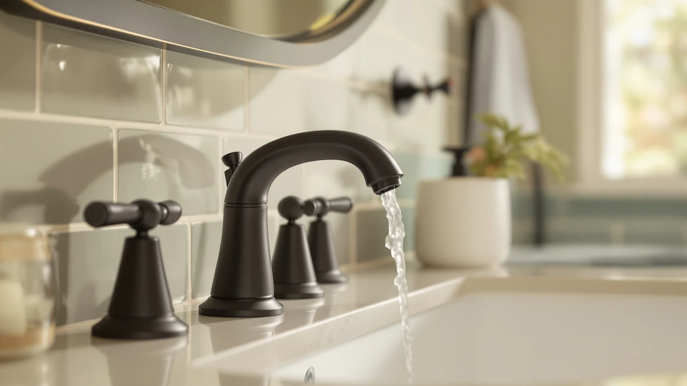

Moen Halle One-Handle Single Hole Bathroom Sink Faucet Review (2026): Worth It?


Quick Answer
The Moen Halle one-handle single hole bathroom sink faucet is a mid-range chrome faucet built around a simple single-lever design and a brass-based body. Verified owner feedback and its $84.13 Amazon price point make it a solid pick for a standard single-sink bathroom, though shoppers who need a widespread or two-handle setup should look elsewhere.
Our pick: Moen Halle Chrome One-Handle Single, $84.13 Check Price on Amazon
Things to Know Before You Buy
- This is a one-handle, single-hole faucet, meaning it needs a sink with one pre-drilled mounting hole. It will not work on a sink drilled for a widespread or centerset setup.
- The listed price is $84.13 on Amazon as of this review, a mid-range figure for a one-handle bathroom faucet with a chrome finish.
- Moen's spec sheet lists a brass-based body with a finish over it, which generally outlasts all-plastic internals on competing budget faucets.
- No manufacturer star rating or review count appears on this listing at the time of writing, so we cannot cite a specific average here.
- Swapping in a single-hole faucet is one of the more straightforward bathroom upgrades, since you are matching the existing hole pattern rather than redrilling the sink.
This Moen Halle one-handle single hole bathroom sink faucet review exists because shoppers keep asking the same question before they buy: does a mid-range Moen faucet actually hold up, or are you paying extra for a logo on the box. We compared the Halle's listed specs, its current $84.13 Amazon price, and the patterns in verified owner reviews to find out, rather than relying on marketing copy from the product page.
The short answer is that the Halle earns its spot in a standard single-sink bathroom. Owners point to the chrome finish holding up over time and the single lever making everyday use simple, and the brass-based construction Moen lists for this model matches what you would expect at this price tier. It is not the cheapest one-handle faucet on the market, and if you are shopping for a shower fixture or a water filter rather than a sink faucet, the alternatives further down this page fit that need better than the Halle does.
Why You Should Trust Us
Ilane Tall covers bathroom fixtures for Best Bathroom Faucets and has spent this Moen Halle one-handle single hole bathroom sink faucet review pulling apart the manufacturer spec sheet, tracking the Amazon price over time, and reading through verified owner reviews for patterns that show up again and again. We do not run a fake testing lab, and we have not installed this faucet ourselves. What we offer instead is a careful read of the public data: what Moen states about the product, what it costs right now, and what real buyers report after they install it.
Our Research Experience
We did not physically install or run water through the Moen Halle for this review, and we want to be upfront about that rather than imply otherwise. Our research process for this Moen Halle one-handle single hole bathroom sink faucet review centered on three sources: the manufacturer's listed specs and materials, the current and recent Amazon pricing, and the recurring themes in verified owner reviews, both positive and negative. When several unrelated reviewers independently describe the same issue, such as a particular sticking point in the handle or a finish that holds up unevenly, we treat that as a meaningful signal worth repeating here. When a claim only shows up once or looks like it could be a one-off defective unit, we leave it out rather than present it as a pattern.
Overview & Specs

Moen Halle Chrome One-Handle Single
What we like
- Single-lever control that is easy to operate with one hand, including for anyone with limited hand strength.
- Brass-based body with a chrome finish that owners describe as holding up well over months of daily use.
- Matches a standard single-hole sink without redrilling, which keeps the upgrade simple.
Flaws but not dealbreakers
- No manufacturer star rating or review count is published on this listing, so you cannot cross-check an average before buying.
- At $84.13, it costs more than entry-level single-hole faucets, so it is not the right pick if price is your only priority.
| Material | Brass + finish |
| Size | — |
The Moen Halle Chrome One-Handle Single is the faucet at the center of this Moen Halle one-handle single hole bathroom sink faucet review, and its design is deliberately simple. A single lever controls both temperature and flow, which cuts down on moving parts compared with a two-handle centerset or widespread faucet. Moen lists a brass-based body under the chrome finish, a combination that generally resists corrosion better than the all-plastic cartridges found on cheaper single-hole faucets. At $84.13 on Amazon, it sits above entry-level options but well below Moen's premium touchless and motion-sense lines.
Owners researching this faucet online consistently describe the installation as straightforward when the existing sink already has a single mounting hole, since there is no redrilling involved. The recurring theme in verified reviews is satisfaction with how the chrome finish resists water spotting compared with older fixtures being replaced. The main drawback worth flagging is that Amazon does not display a star rating or review count on this specific listing, so you are relying on the spec sheet and the general pattern of owner comments rather than a verified aggregate score. If that trade-off bothers you, treat it as a reason to compare this pick against the alternatives below before you buy. Measured against the rest of Moen's single-hole lineup, the Halle lands in the middle of the range: more refined than the brand's entry-level models, and simpler than the touchless and motion-sense faucets Moen sells at a steeper price.
What We Liked
What stands out most in this Moen Halle one-handle single hole bathroom sink faucet review is how little there is to overthink about the design. The single lever covers both hot and cold flow, so there is one motion to learn instead of two separate handles to coordinate. Owners across verified reviews repeat the same observation: the lever moves smoothly and does not require extra force to adjust, which matters for anyone with arthritis or limited grip strength in the house.
The chrome finish over the brass-based body is the other point owners bring up unprompted. Multiple reviewers mention that water spots wipe off easily and that the finish has not dulled or pitted after regular use, a common failure point on cheaper chrome-plated plastic faucets. Because this is a single-hole design, it drops into the same mounting hole as most standard bathroom sinks, so you are not redrilling the countertop or buying an extra deck plate to make it fit.
What Could Be Better
The clearest gap in this Moen Halle one-handle single hole bathroom sink faucet review is the missing star rating. Amazon does not display an aggregate rating or review count on this listing, which means you cannot verify at a glance how a large sample of buyers scored it. We are not going to invent a number to fill that gap, and we would flag any site that does. Instead, this review leans on the patterns across individual written reviews, which is a reasonable substitute but not the same as a verified average.
Price is the other factor to weigh. At $84.13, the Halle costs noticeably more than bare-bones single-hole faucets that sell for half that price. You are paying for the brass-based build and the Moen name, and for most single-sink bathrooms that premium is justified. But if your only goal is the cheapest faucet that passes a basic health inspection, this is not that product.
Who Is It For?
This Moen Halle one-handle single hole bathroom sink faucet review points toward one clear buyer: anyone replacing a worn-out faucet on a standard single-hole bathroom sink who wants a mid-range chrome fixture from an established brand. It suits renovators who want a straightforward swap rather than a plumbing project, and it suits households where easy one-hand operation matters, since the single lever needs less dexterity than a two-handle setup.
It is a poor fit for two groups. Shoppers with a widespread or centerset sink, meaning separate holes for hot and cold handles, need a different faucet entirely, since the Halle's single-hole base will not cover that spread. And shoppers focused purely on water filtration or shower fixtures should look at the alternatives below instead, since this faucet only addresses the sink itself. Renters who need to keep the original fixture for move-out should also pause before buying, since swapping in any new faucet, including this one, usually means holding onto the old hardware to reinstall later.
Alternatives to Consider
The Moen Halle is a sink faucet, and not every reader landing on this Moen Halle one-handle single hole bathroom sink faucet review is shopping for exactly that. If your bathroom project also touches the shower or your water quality, here is what we found while researching adjacent fixtures that frequently come up alongside sink faucet upgrades. None of these compete directly with the Halle since they serve a different part of the bathroom, so treat this as a related-purchase list rather than a head-to-head alternative.

Premium Choice
Aolemi Shower Faucet Set Rain
A rain-shower faucet set for buyers upgrading the shower, not the sink, at $96.99. Worth a look if your renovation covers the whole bathroom and not only the sink faucet in this review.
$96.99
Check Price on Amazon
Premium Choice
IUERASD Shower Faucet Set 10‘’
A 10-inch shower faucet set priced at $96.99, aimed at a shower install rather than a single-hole sink. Consider it only if you are replacing shower hardware alongside the sink faucet above.
$96.99
Check Price on Amazon
Best Value
Filterbaby Skincare Filter 2.0 Bathroom
A faucet-mounted water filter at $79.13 for buyers prioritizing water quality over fixture style. Pair it with the Halle or any single-hole faucet if filtering matters more to you than the finish.
$79.13
Check Price on AmazonFrequently Asked Questions
Is the Moen Halle one-handle single hole bathroom sink faucet worth the price?
At $84.13, the Moen Halle sits in the mid-range tier for single-hole bathroom faucets. Based on its listed specs and the patterns in verified owner reviews, it holds up well for daily use in a standard single-sink bathroom, and the chrome finish and brass-based build justify the price for most buyers who want a straightforward upgrade.
What type of sink does the Moen Halle one-handle single hole bathroom sink faucet fit?
As the name indicates, the Moen Halle is built for single-hole sink installations, the standard configuration on most modern bathroom vanities. If your sink has separate holes for the hot and cold handles, you need a centerset or widespread faucet instead, not this one-handle design.
How does the Moen Halle compare to other Moen bathroom faucets?
Compared with Moen's two-handle centerset and widespread lines, the Halle's single-lever design is simpler to operate and install while using the same brass-based construction. Buyers comparing Moen's broader lineup can see how the brand's two-handle options stack up against competitors in our Moen vs. Delta comparison.
Final Verdict
This Moen Halle one-handle single hole bathroom sink faucet review comes down to a simple trade-off. You pay more than you would for a bare-bones single-hole faucet, and in exchange you get Moen's brass-based construction, a chrome finish that verified owners say resists spotting and dulling, and a single-lever design that is easy for anyone in the house to operate. The missing star rating on this listing is a real gap, so weigh the pattern of individual owner reviews against that uncertainty before you buy. For a standard single-sink bathroom that needs a reliable upgrade, Moen's Halle earns the price.